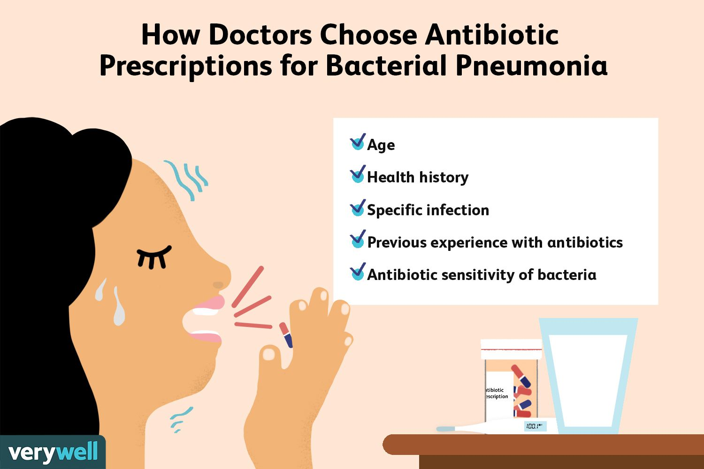

Pneumonia
Harmfull and rare, consult a doctor
Pneumonia is an infection that inflames the air sacs in one or both lungs. The air sacs may fill with fluid or pus (purulent material), causing cough with phlegm or pus, fever, chills, and difficulty breathing. A variety of organisms, including bacteria, viruses and fungi, can cause pneumonia.
Pneumonia can range in seriousness from mild to life-threatening. It is most serious for infants and young children, people older than age 65, and people with health problems or weakened immune systems.Pneumonia is an inflammatory condition of the lung primarily affecting the small air sacs known as alveoli. Symptoms typically include some combination of productive or dry cough, chest pain, fever, and difficulty breathing.The severity of the condition is variable.
Pneumonia is usually caused by infection with viruses or bacteria, and less commonly by other microorganisms.Identifying the responsible pathogen can be difficult. Diagnosis is often based on symptoms and physical examination. Chest X-rays, blood tests, and culture of the sputum may help confirm the diagnosis.The disease may be classified by where it was acquired, such as community- or hospital-acquired or healthcare-associated pneumonia.
Risk factors for pneumonia include cystic fibrosis, chronic obstructive pulmonary disease (COPD), sickle cell disease, asthma, diabetes, heart failure, a history of smoking, a poor ability to cough (such as following a stroke), and a weak immune system.
Vaccines to prevent certain types of pneumonia (such as those caused by Streptococcus pneumoniae bacteria, linked to influenza, or linked to COVID-19) are available. Other methods of prevention include hand washing to prevent infection and not smoking.
Treatment depends on the underlying cause.Pneumonia believed to be due to bacteria is treated with antibiotics.If the pneumonia is severe, the affected person is generally hospitalized.Oxygen therapy may be used if oxygen levels are low.
Each year, pneumonia affects about 450 million people globally (7% of the population) and results in about 4 million deaths. With the introduction of antibiotics and vaccines in the 20th century, survival has greatly improve. Nevertheless, pneumonia remains a leading cause of death in developing countries, and also among the very old, the very young, and the chronically ill. Pneumonia often shortens the period of suffering among those already close to death and has thus been called "the old man's friend
👉symptoms
 The signs and symptoms of pneumonia vary from mild to severe, depending on factors such as the type of germ causing the infection, and your age and overall health. Mild signs and symptoms often are similar to those of a cold or flu, but they last longer.
Signs and symptoms of pneumonia may include:
Chest pain when you breathe or cough
Confusion or changes in mental awareness (in adults age 65 and older)
Cough, which may produce phlegm
Fatigue
Fever, sweating and shaking chills
Lower than normal body temperature (in adults older than age 65 and people with weak immune systems)
Nausea, vomiting or diarrhea
Shortness of breath
The signs and symptoms of pneumonia vary from mild to severe, depending on factors such as the type of germ causing the infection, and your age and overall health. Mild signs and symptoms often are similar to those of a cold or flu, but they last longer.
Signs and symptoms of pneumonia may include:
Chest pain when you breathe or cough
Confusion or changes in mental awareness (in adults age 65 and older)
Cough, which may produce phlegm
Fatigue
Fever, sweating and shaking chills
Lower than normal body temperature (in adults older than age 65 and people with weak immune systems)
Nausea, vomiting or diarrhea
Shortness of breath